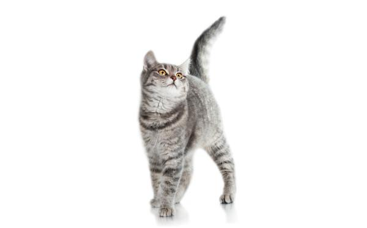

Hechizo de mar
A veces vemos a nuestras pequeñas fieras sin mucho ánimo a la hora de escudriñar lo que tienen en sus platitos para comer. ¡Esto se ha acabado! A partir de ahora, con esta receta, quedarán "hechizados" para siempre. No dejes de comprobarlo por ti mismo, te "encantará" verles tan contentos y felices :-)
Ingredientes
- 600g Carne de pavo
- 120g Ragout de pollo
- 225g Mix pollo y pescado con hueso
- 35g Higado de vacuno
- 70g Sangre de vacuno
- 10g Aceite de pescado y onagra
- 3g Cal de algas
- 3g Extrazto de mejillón de labio verde
- 1g Taurina
- 500g Zanahoria rallada
- 500ml Agua
Preparación
